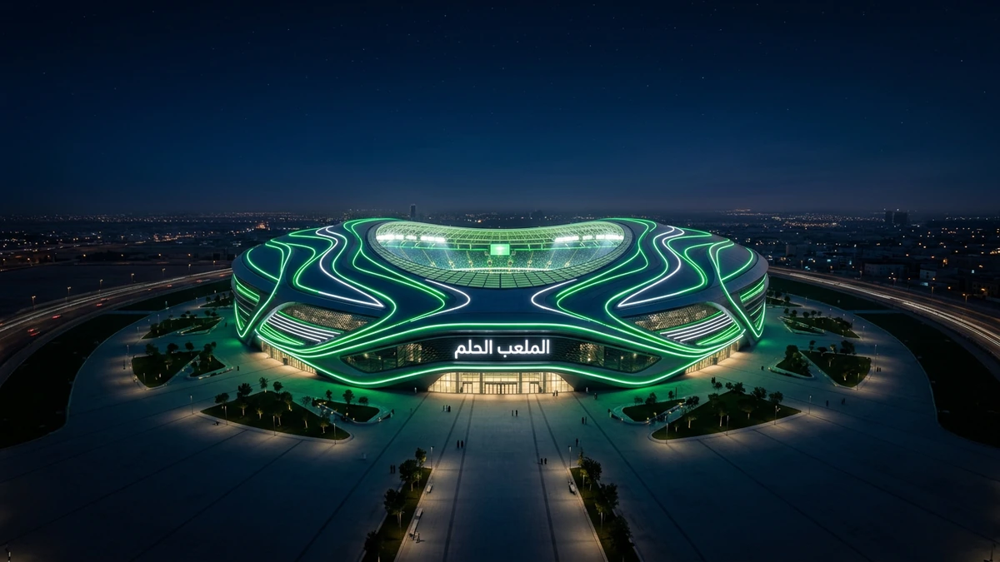
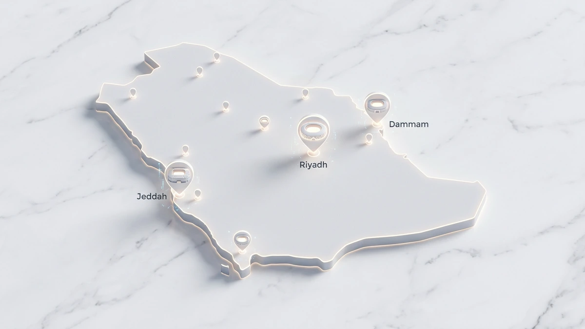
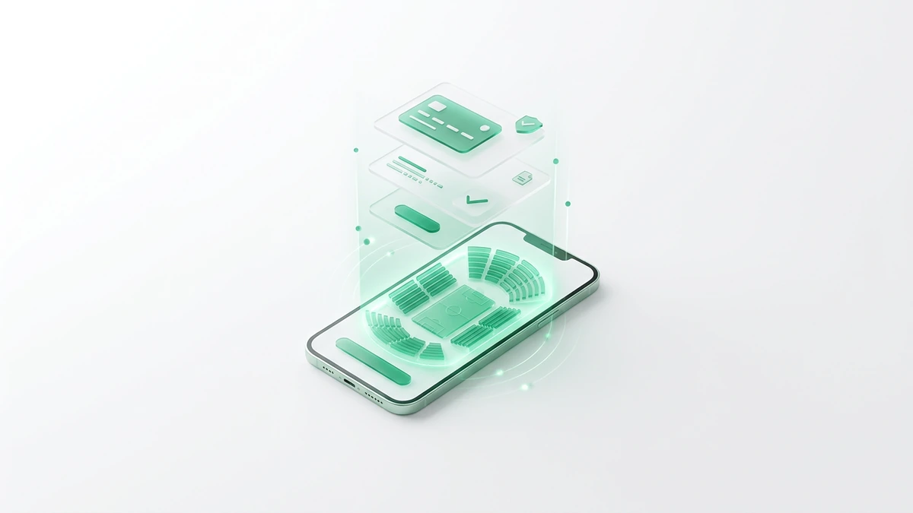
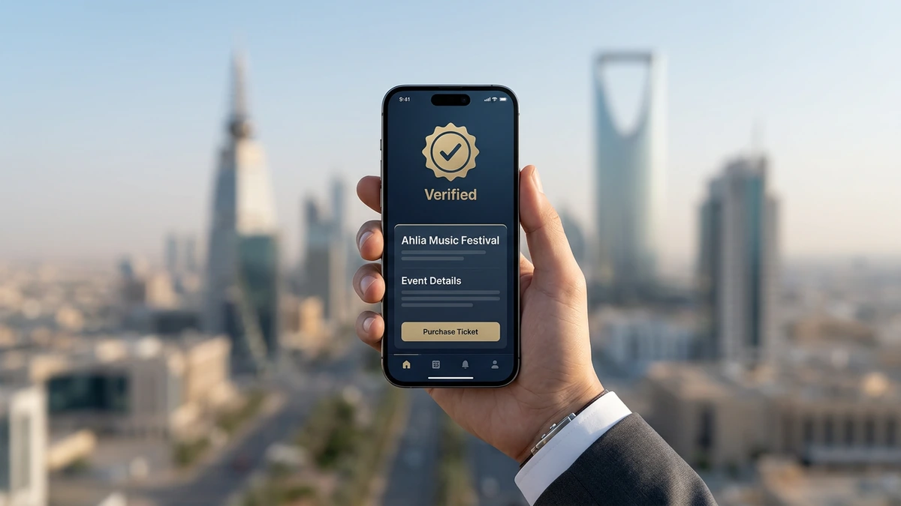
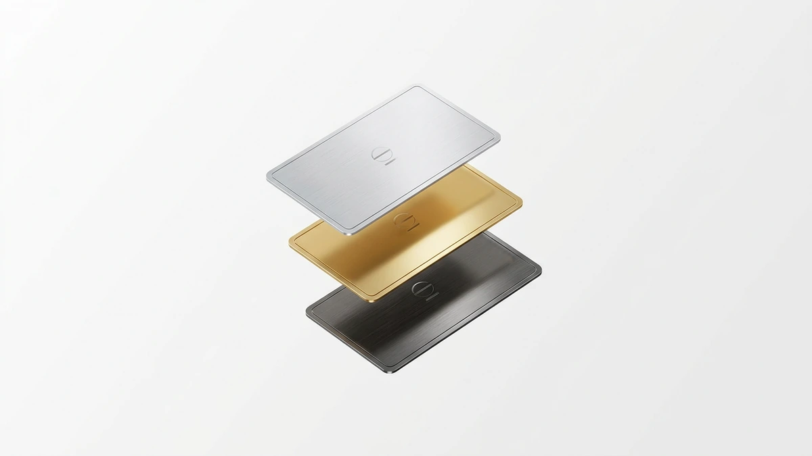
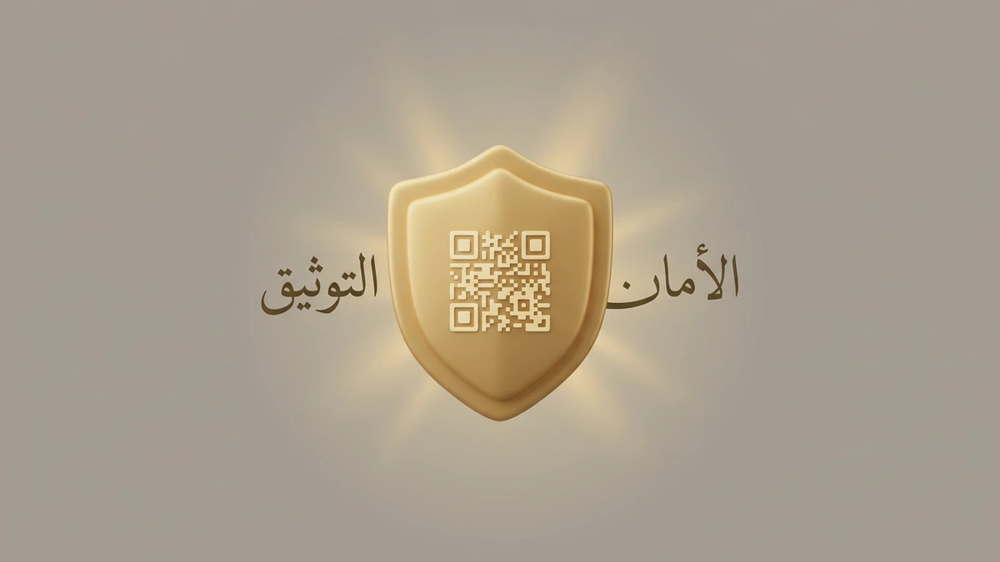

!واجهة إستاد رياضي حديث في المملكة يبرز سهولة حجز تذاكر المباريات تتجه أنظار العالم نحو الملاعب السعودية التي تستعد لاستضافة تصفيات حجز تذاكر المباريات لمونديال 2026، حيث يمتزج الشغف الكروي بآمال التأهل التاريخية. يواجه المشجعون تحديات تقنية في تأمين مقاعدهم وسط هذا الإقبال الهائل.
تسهل لك منصة تيك إيفنت لحجز التذا تخطي تعقيدات المنصات المختلفة، حيث نوفر لك وصولاً مباشراً لتأمين مكانك في المدرجات المشتعلة بالحماس. ستجد لدينا حلولاً ذكية تضمن لك عدم تفويت أي لحظة إثارة.
سارع الآن بزيارة منصة تيك إيفنت لتأمين تذاكر المباريات الآن لمنتخبنا الوطني وأقوى مواجهات دوري روشن قبل نفاد الكمية المطروحة للجماهير.
تتوزع تذاكر كأس العالم 2026 حالياً بين منصة Webook ومنصة فيكتوري أرينا، مما يتطلب منك متابعة دقيقة للمواعيد والأسعار الرسمية. نحن نختصر عليك عناء البحث بتوفير تحديثات فورية حول توفر المقاعد وأفضل الفئات المتاحة.
خريطة الملاعب والمنصات الرسمية في السعودية لعام 2026

تعتمد تجربة حجز تذاكر المباريات في السعودية على توزيع ذكي بين المنصات لضمان الكفاءة. ستجد أن كل ملعب يرتبط بجهة تشغيل محددة تسهل عليك الوصول لمقعدك المفضل في الملاعب الكبرى.
يمكنك الآن تنظيم جدول حضورك بناءً على الملاعب والمنصات التي تديرها، حيث توفر بعضها خيارات مرنة مثل تقسيط تذاكر المباريات لتسهيل الدفع. كما تلتزم هذه الجهات بسياسات واضحة بشأن استرجاع التذاكر في حال التغييرات الطارئة.
| الملعب / المنشأة | المنصة الرسمية المعتمدة | نوع التذاكر المتاحة |
|---|---|---|
| ملعب مرسول بارك (الأول بارك) | منصة فيكتوري أرينا | تذاكر عادية وحصرية |
| استاد الملك فهد الدولي | منصة Webook | فئات متعددة و VIP |
| ملعب مدينة الملك عبدالله (الجوهرة) | منصة نادي الاتحاد/الأهلي | تذاكر موسمية وفردية |
| الملاعب المستضيفة للفعاليات الكبرى | مواقف بيع تذاكر مباريات السعودية | تذاكر المجموعات والسياح |
توفر هذه المواقع أيضاً فئات فاخرة تشمل تذاكر VIP المباريات التي تمنحك مزايا دخول خاصة وخدمات ضيافة متكاملة.
ولضمان عدم تفويت أي حدث رياضي هام، يمكنك دائماً استكشف الفعاليات الرياضية المتاحة عبر منصتنا لتكون أول من يعلم بالمواعيد الجديدة. ولمعرفة المزيد حول معايير الملاعب الدولية، يمكنك الاطلاع على دليل الفيفا للملاعب.
كيفية شراء تذاكر كرة القدم عبر تيك إيفنت بخطوات بسيطة

يمكنك الآن إتمام عملية حجز تذاكر المباريات في السعودية بكل سهولة عبر واجهة مستخدم ذكية ومبسطة. ابدأ بالدخول إلى المنصة واختيار المواجهة التي ترغب في حضورها من قائمة الفعاليات الرياضية المحدثة باستمرار.
بمجرد تحديد فئة المقعد المناسبة لك، ستنتقل إلى مرحلة الدفع الآمنة التي تدعم الخيارات المحلية المفضلة في المملكة. توفر المنصة مرونة تامة عند شراء تذاكر كرة القدم لضمان وصول التذكرة الرقمية إلى هاتفك فوراً.
- اختر المباراة والملعب من القائمة المتاحة.
- حدد عدد التذاكر وفئة الجلوس (ذهبية، فضية، أو عادية).
- أدخل بياناتك الشخصية أو قم بتسجيل الدخول.
- اختر وسيلة الدفع (مدى، STC Pay، أو البطاقات الائتمانية).
- استلم تذكرتك الإلكترونية عبر البريد أو التطبيق.
تأكد دائماً من مراجعة قواعد السلوك في الملاعب لضمان تجربة حضور ممتعة وآمنة. إذا كنت مستخدماً جديداً، فننصحك ببدء إنشاء حساب جديد للحجز لتسريع عمليات الشراء المستقبلية وتلقي تنبيهات المباريات الكبرى.
لماذا تختار تيك إيفنت لتأمين مقعدك في مدرجات المملكة؟

تدرك منصة تيك إيفنت أن الحصول على مقعدك في الملاعب السعودية قد يمثل تحدياً ميزانياً، لذا تتيح لك المنصة حصرياً خيار تقسيط حجز تذاكر المباريات على 12 دفعة ميسرة.
تضمن لك المنصة الوصول إلى تذاكر VIP المباريات حتى في اللحظات الأخيرة عبر سوق ثانوية آمنة تخدم أكثر من 30,000 مستخدم، مع توفير نظام استرجاع مرن يحمي استثمارك في حال تغيرت خططك.
- تقسيط مريح: سداد قيمة التذكرة على 12 شهراً لتناسب ميزانيتك الشخصية.
- سوق آمنة: تداول التذاكر بكل ثقة عبر منصة وسيطة تمنع الاحتيال وتضمن حقوقك.
- دعم فني متواصل: فريق مختص يحل مشكلات الحجز فوراً لضمان دخولك للملعب.
- مرونة الاسترجاع: إمكانية استرداد الأموال وفق شروط ميسرة تضمن لك راحة البال.
تعتمد المنصة أعلى معايير الشفافية في عرض أسعار تذاكر المباريات لضمان حصولك على أفضل قيمة مقابل المال. يمكنك الآن التعرف أكثر على من نحن ورؤيتنا لتطوير سوق التذاكر وكيف نساهم في تأمين تجربة حضور جماهيري لا تُنسى بأحدث التقنيات.
تحليل فئات وأسعار تذاكر دوري روشن وكأس العالم 2026

تعتمد تكلفة حجز تذاكر المباريات في الملاعب السعودية على فئة المقعد ونوع المواجهة، حيث تبدأ الفئات الموحدة بأسعار تنافسية تناسب الجميع، بينما توفر فئات المنصة الفضية والذهبية تجربة مشاهدة بامتيازات تقنية ولوجستية متطورة.
تتيح لك منصة تيك إيفنت ميزة استثنائية عبر نظام تقسيط مرن يصل إلى 12 دفعة، مما يسهل عليك اقتناص مقاعد VIP في مواجهات مثل تذاكر مباراة السعودية ومصر دون عبء مالي فوري.
يمكنك الآن تعزيز حضورك الجماهيري من خلال بناء شراكات الأندية والجهات الرسمية لضمان الحصول على حصص تذاكر دوري روشن للمجموعات بأسعار تفضيلية وخدمات استرجاع مرنة تضمن حقك كاملاً.
مزايا تذاكر VIP والبوكسات الخاصة في الملاعب السعودية
عندما تبحث عن تجربة استثنائية في ملاعب الرياض وجدة، توفر لك منصة تيك إيفنت وصولاً مباشراً إلى تذاكر VIP المباريات التي تضمن لك أرقى معايير الضيافة السعودية بخصوصية تامة وإطلالات بانورامية كاشفة للملعب.
تعتمد المنصة أنظمة حجز فورية متطورة تتيح لك اختيار البوكسات الخاصة والمقاعد الذهبية والفضية، مع ضمان استلام التذكرة الرقمية على هاتفك فوراً لتجنب الزحام، مما يجعل عملية حجز تذاكر المباريات للفئات الفاخرة تجربة تقنية سلسة وآمنة.
- خدمات ضيافة متكاملة تشمل وجبات فاخرة ومواقف سيارات مخصصة.
- إمكانية تقسيط قيمة تذاكر الفئات العليا حتى 12 دفعة ميسرة.
- دعم فني متخصص للمجموعات والشركات لترتيب الحجوزات الجماعية.
- سياسة استرجاع مرنة تضمن لك حفظ حقوقك المالية في حال تغيرت خططك.
بفضل شراكاتنا مع خبراء عالميين، نضمن لك في تيك إيفنت سوقاً ثانوية موثوقة لتداول التذاكر الفاخرة بكل شفافية، حيث يمكنك استكشاف الفعاليات الرياضية المتاحة وحجز مقعدك في كبائن الضيافة بضغطة زر واحدة.
موثوقية تيك إيفنت: أكثر من 30 ألف مستخدم يثقون بنا

تثبت منصة تيك إيفنت ريادتها في السوق السعودي من خلال خدمة أكثر من 30 ألف مشتري وبائع عالمياً. يعتمد نجاحنا على توفير تجربة آمنة تماماً عند حجز تذاكر المباريات الكبرى.
تتجلى موثوقيتنا في إدارة تذاكر الفعاليات الضخمة مثل كأس خادم الحرمين الشريفين ومباريات موسم الرياض. نضمن لك الشفافية الكاملة في سوق التذاكر الثانوية مع خيارات استرجاع مرنة تحمي حقوقك المالية.
إذا كنت تمتلك فائضاً من التذاكر، يمكنك الآن عرض تذكرتك للبيع بأمان عبر منصتنا للوصول لآلاف المشجعين الموثوقين فوراً بجانب الاستفادة من أنظمة الدفع المتطورة لدينا.
نظام حماية المشتري وضمان استرجاع الأموال
نظام الحماية في ملاعبنا السعودية يعتمد على تشفير متطور يمنع التلاعب؛ فبمجرد إتمام حجز تذاكر المباريات، تحصل على رمز استجابة سريعة (QR Code) فريد يتم التحقق منه تقنياً عند البوابات الإلكترونية لضمان صحة التذكرة.
تلتزم المنصات الرسمية بمعايير وزارة الرياضة لحماية حقوقك كأحد المشجعين، حيث يوفر لك النظام ضمانات واضحة لاسترداد الأموال أو التعويض في حال إلغاء الفعالية أو تعديل موعدها بشكل طارئ، مما يزيل مخاوف الاحتيال تماماً.
عند رغبتك في شراء تذاكر كرة القدم، تأكد من استخدام القنوات الموثوقة التي توفر سجلات تتبع لعمليات الدفع، ويمكنك البدء الآن بتأمين مقعدك عبر تذاكر المباريات الآن المتاحة بضمانات استرجاع مرنة تحمي استثمارك الرياضي.
الأسئلة الشائعة حول حجز تذاكر المباريات في السعودية
كيف يمكنني حجز تذاكر المباريات في السعودية لعام 2026؟
هل تتوفر خيارات تقسيط عند شراء تذاكر كرة القدم؟
ماذا أفعل إذا واجهت مشكلة في الدفع عبر "مدى"؟
هل يمكنني استرجاع مبلغ التذكرة في حال تغيرت خططي؟
كيف أضمن صحة التذاكر المشتراة من السوق الثانوية؟
الخلاصة: لا تفوت متعة المدرج واحجز تذكرتك اليوم
تضمن لك منصة تيك إيفنت تجربة استثنائية عند حجز تذاكر المباريات في الملاعب السعودية، حيث نجمع بين الأمان التام والسرعة الفائقة. نوفر لك وصولاً مباشراً لأقوى البطولات المحلية والعالمية بضمانات رسمية تحمي حقوقك.
تدرك المنصة شغف الجمهور السعودي، لذا أتحنا نظام تقسيط مرن يصل إلى 12 دفعة لتسهيل الحصول على تذاكر المباريات الآن دون عناء. يمكنك اختيار مقعدك المفضل واستلام تذكرتك الرقمية فوراً لتجنب الزحام وطوابير الانتظار.
لا تدع الفرصة تفوتك لدعم الأخضر وأنديتك المفضلة في قلب الحدث قبل نفاد المقاعد المخصصة لموسم 2026. إذا كنت بحاجة لمساعدة فورية، يمكنك تواصل معنا لمزيد من الاستفسارات وتأمين مكانك في المدرجات اليوم.